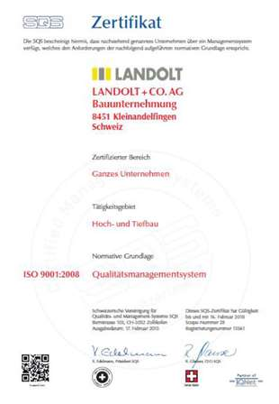

Unsere Produkte und Leistungen richten wir auf die hohen Ansprüche unserer Kunden an Qualität und Nutzen. Der nachhaltigen Umweltschonung und Ressourcen-Erhaltung schenken wir Beachtung. Nur so gewinnen wir das Vertrauen der Kunden und können es langfristig erhalten und ausbauen.
Gute Beziehungen zu unseren Kunden und Lieferpartnern liegen uns am Herzen und werden von jeder Mitarbeiterin und jedem Mitarbeiter aktiv gepflegt. Fairness im Umgang mit unseren Mitbewerbern ist für uns selbstverständlich.
Als innovative und fortschrittliche Bauunternehmung begegnen wir den komplexen Herausforderungen des hart umkämpften Baumarkts mit kreativen Kundenlösungen, leistungsorientiertem Engagement und mit Begeisterung.
Als Gruppe sind wir vorwiegend überregional im Raum Zürich bis Schaffhausen tätig.
Im anspruchsvollen Hoch- und Tiefbau wollen wir unsere führende Stellung halten und weiter entwickeln.
Wir wollen Gewinn erzielen, um den Fortbestand unserer Unternehmung und unserer Arbeitsplätze sicherzustellen.
Alle Mitarbeiterinnen und Mitarbeiter tragen unser Leitbild aktiv mit und verstehen sich als wichtigen Teil des Unternehmens. Sie sind deshalb auch zu überdurchschnittlichen Leistungen bereit, um die Unternehmensziele zu erreichen.
Wir sind ein fairer Arbeitgeber und setzen auf die leistungsgerechte Entlöhnung. Unsere Mitarbeiterinnen und Mitarbeiter bilden sich laufend weiter, um ihr Fachwissen auszubauen und ihre Persönlichkeit weiter zu entwickeln.
Wir führen situativ und fördern das eigenverantwortliche und selbständige Handeln jedes Einzelnen.
Inventar sowie Bau- und Betriebsabläufe halten wir stets auf dem aktuellen technischen Stand.
Qualitätssicherung wird bei uns gross geschrieben.
Wir sind seit dem 25.02.1998 durch die Schweizerische Vereinigung für Qualitäts- und Management-Systeme SQS zertifiziert.
